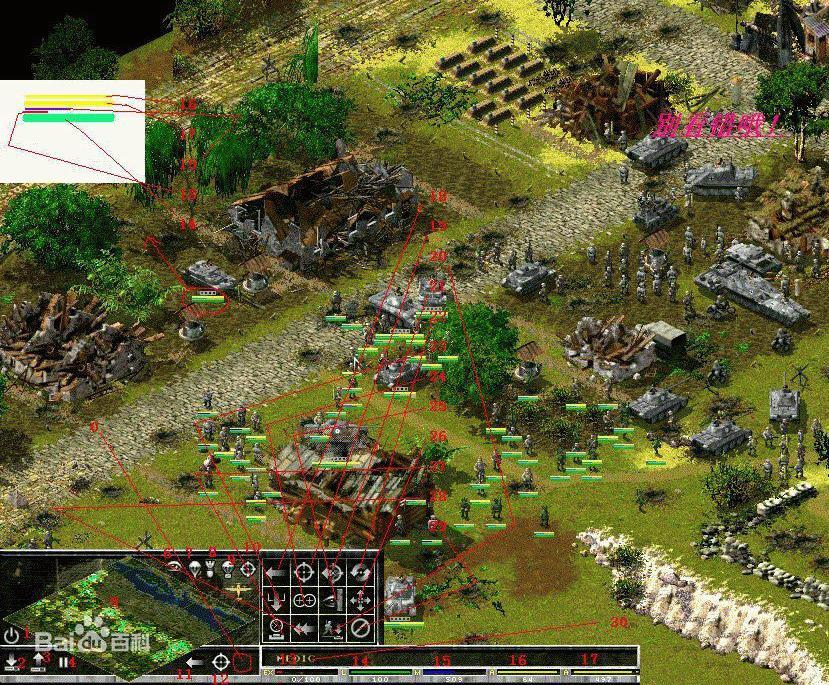
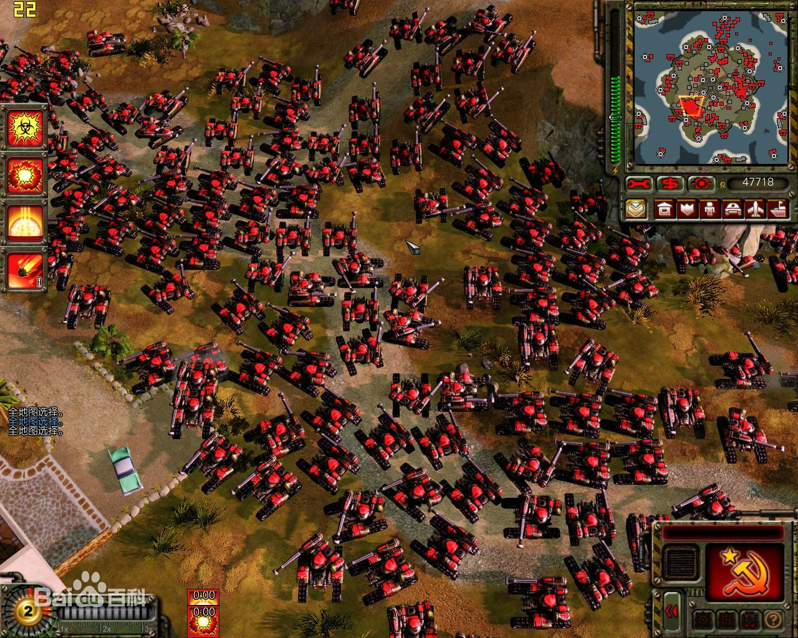
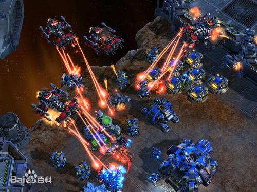
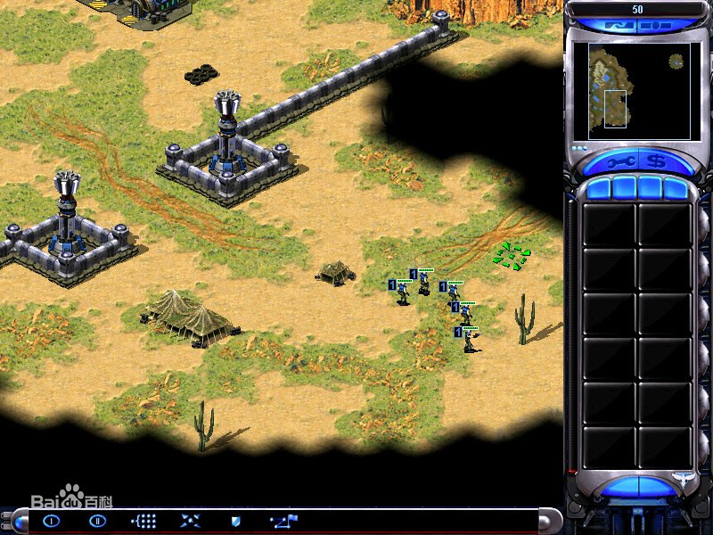

即时战略游戏（Real-Time Strategy Game），简称RTS。游戏是策略游戏（Strategy Game）的一种。 游戏是即时进行的，而不是策略游戏多见的回合制。另外玩家在游戏中经常会扮演将军，进行调兵遣将这种宏观操作。
形态起源 即时战略游戏的形态经过了漫长的演变，按照如今的标准，是很难确定其前身的。这个游戏类型在英国与北美走过了各自的发展道路，最终融合成一个共同的形态。
在英国，即时战略可以追溯至1983年，由John Gibson开发的《Stonkers》，以及1987年发行的《Nether Earth》。 这两款游戏都发行在ZX Spectrum家用电脑上。而在北美，由Evryware's Dave和Barry Murry开发的《The Ancient Art of War》（1984年） 被普遍认为是现代即时战略的始祖，也包括了它的续作：《The Ancient Art of War at Sea》（1987年）。 然而，由Ozark Softscape开发的《Cytron Masters》（1982年），同样被认为是最早的即时战略游戏始祖。
有些资料认为1982年Intellivision发行的《Utopia》是第一款即时战略游戏。在该游戏中，两名玩家采集资源并且互相战斗。 然而，该游戏缺乏即时战略不可或缺的直接战斗控制。同年的另一个游戏《Legionnaire》，由Chris Crawford开发并发行在Atari的8位家用游戏机上，恰恰与《Utopia》形成了对立： 它提供了完整的即时战斗、多变的地形和互助概念，却缺乏资源采集和经济生产概念。因此，《Legionnaire》更适合作为即时战术游戏的始祖。 1989年发行在Sega Mega Drive/Genesis游戏机上的《Herzog Zwei》可能是最早拥有所有即时战略必要元素的游戏。 尽管在该游戏中，玩家只能控制一个单位，但其单位的控制方式成为了日后的鼠标点击操作方式的铺垫。 另外，基地的经济生产在该游戏中占有重要地位，因此它们的控制与破坏也成为了该游戏的关键。
1990年发行在Amiga和Atari ST上的《Battle Master》、1990年的《Supremacy》（又名《Overlord》）和1991年由Sensible Software开发的《Mega Lo Mania》。 尽管这些游戏缺乏对战斗单位的直接控制，它们仍提供了对资源管理和经济系统的控制。 此外，《Mega Lo Mania》拥有一颗能加强攻击或者防御的高级科技树。 然而，直到1992年，由Westwood Studios（该工作室先前也制作过一款名叫《Battletech: The Crescent Hawk's Revenge》的即时战术游戏） 开发的《沙丘魔堡II》（Dune II：The Building of a Dynasty）才真正确立了即时战略游戏的形态，并使其成为电子游戏中的一个独特类别。
黄金时期 尽管即时战略游戏拥有广阔的历史，其中的一部分的知名度远胜过其他同类游戏， 尤其是1992年到1998年间由Blizzard Entertainment和Westwood Studios开发的即时战略游戏。
1992年，由Westwood Studios开发的《沙丘魔堡II》（Dune II: The Building of a Dynasty）阐述了现代即时战略游戏中的所有核心概念，例如用鼠标控制单位、资源采集等。 这些都是此后的即时战略游戏的原型。《沙丘魔堡II》的成功影响了Blizzard Entertainment，也使Westwood Studios和Blizzard Entertainment形成了长达数年的竞争关系。 1994年，Blizzard Entertainment推出了《魔兽争霸》（Warcraft: Orcs & Humans），该作品大体上只能算是《沙丘魔堡II》的中古世纪仿作。 真正获得成功的，是其1995年的续作《魔兽争霸II》（Warcraft II: Tides of Darkness）。
1995年，Westwood Studios的《命令与征服》（Command & Conquer）是最早拥有多人对战模式的即时战略游戏，与《命令与征服：红色警戒》 （Command and Conquer: Red Alert）一道，成为了最受欢迎的早期竞技游戏 。其中，一套《命令与征服》允许两位玩家进行网络对战，因为游戏内附的两片光碟都是可以独立执行的。
1997年，Cavedog Entertainment推出的《横扫千军》（Total Annihilation）首次采用了3D单位，并且着重大规模战斗，强调宏观操作。 它采用的流线型的界面对此后许多即时战略游戏产生了影响。
1998年，Blizzard Entertainment推出了《星际争霸》（StarCraft）。《星际争霸》成为了最受欢迎的即时战略游戏之一。的排位赛推动了即时战略游戏的多人竞技。 在韩国仍然举办《星际争霸》的职业竞赛。总而言之，以上所有的这些游戏定义了即时战略的形态，并且成为了衡量日后新的即时战略游戏的事实标准。
改进时期 从1995年开始，即时战略的形态已经基本稳定，而新的即时战略游戏倾向于加入更多的单位、更大的地图、3D地形， 而游戏概念的创新很少，往往只是对以往成功作品的继承和改进。
作为游戏完善化的模范，1997年，Cavedog Entertainment备受赞誉的《横扫千军》 （Total Annihilation）提取了《命令与征服》（Command & Conquer）的核心机制，并且在即时战略游戏中首次加入了3D单位。同样在1997年，Microsoft尝试把《文明》（Civilization）的元素和即时战略结合起来，在其作品《帝国时代》（Age of Empires）引入了“技术时代”的概念。这种组合在2001年被Stainless Steel Studios的《地球帝国》（Empire Earth）进一步完善。 而GSC Gameworld的《Cossacks: European Wars》系列选择了另一个方向：将人口规模扩大到上万。
1998年的《Populous: The Beginning》和1999年的《家园》（Homeworld）是最早的全3D即时战略游戏。 《家园》最显著的一点是采用了3D的太空环境，允许向每个方向移动。它的资料片《家园：灾难》（Homeworld Cataclysm，2000年）增加许多新的功能，比如路径点。 2003年推出的《家园2》（Homeworld 2）使在360°的3D环境中的移动更加容易。此外，同样在1999年推出的《Machines》也提供了一个近于100%的3D环境， 试图把即时战略和第一人称射击（FPS）结合起来，尽管该游戏并不怎么成功。此后一小段时间里，出现了一些试验性的战略游戏，比如《Allegiance》（2000年）。 《魔兽争霸III》（Warcraft III，2002）可能最成功的早期3D即时战略游戏。直到大约2002年，随着使用完整的3D引擎的《魔兽争霸III》出现和Ensemble Studio推出了 《神话时代》（Age of Mythology，2002年），3D即时战略才取代2D即时战略成为了标准。 《可汗：不朽的君王》（Kohan: Immortal Sovereigns）加入了一些经典的战争游戏元素，如补给线等
从2D到3D的变化受到了不少的批评，问题主要出在镜头控制和物体的布置上。
一些较新的类型正从即时战略中分离出来或者与其抗衡，虽然即时战术（Real-time tactics），一个表面上与即时战略相似的类别， 早在1995年就已经浮现出来。1998年，Activision在《终极战区》（Battlezone）中尝试把即时战略和第一人称射击（FPS）结合起来， 而在2002年，Rage Games Ltd.在《Hostile Waters》中进行了相同的尝试。
另一些游戏正在背离传统的即时战略模式并增加了其他类型的元素。一个例子就是Ironclad Games推出的《太阳帝国的原罪》（Sins of a Solar Empire）， 混合了大规模星际帝国建设类游戏《Master of Orion》的元素与即时战略的元素，但是其冲突战斗更接近于即时战术模式。
点击返回首页